builderscon tokyo 2018 Main Dates (Sep 7, 8)
builderscon tokyo 2018 Main Dates (Sep 7, 8)
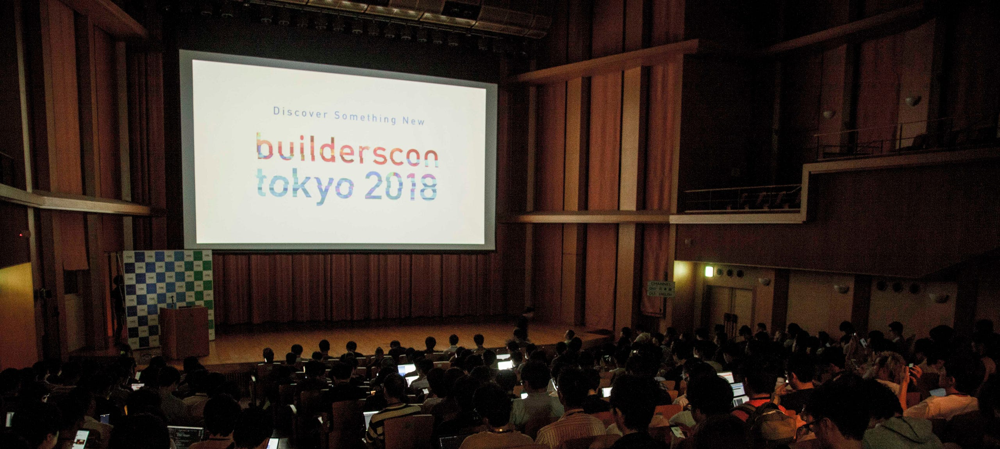
builderscon is a conference about bringing as many talented geeks from a wide range of fields — we are still somewhat web-centric, but we welcome any tech/scientific topic. Our mission is for the attendees to Discover Something New.
Sep 6 (Thu) Sep 7 (Fri) Sep 8 (Sat) @Kyoseikan, Keio University In association with Keio University Graduate School of…builderscon.io
This is a conference run by a few of us weirdos who like to run tech conferences as a hobby. We have sponsors, but there’s not big corporate entity behind this one.
The latest version, builderscon tokyo 2018 was held during September 6th to 8th (plus a Speaker Dinner on the 5th). This is my summary of it.
The Opening
This year I (the main organizer) have had enough doing Opening talks.
I mean, I’ve been doing this for 10 years. As much as I appreciate my sponsors, as much as I need to introduce our guest speakers, as much as I should remind everybody that we have a feedback system — well, I just didn’t want to do another “intro to the conference” talk.
So we just created a movie:
Those of you who play indie games might recognize that this is a Stanley Parable spoof. And yes, that’s The Narrator, Kevan Brighting. We had the pleasure of being able to hire his talents for this silly little piece, and I, as a big fan of The Stanley Parable, was very very happy.
The Stanley Parable is a first person exploration game. You will play as Stanley, and you will not play as Stanley. You…store.steampowered.com
Guest Speakers
We are, at this point, one of the very few community based tech conferences in Japan that specifically invite a broad range of international guest speakers.
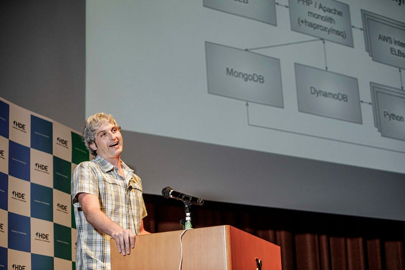
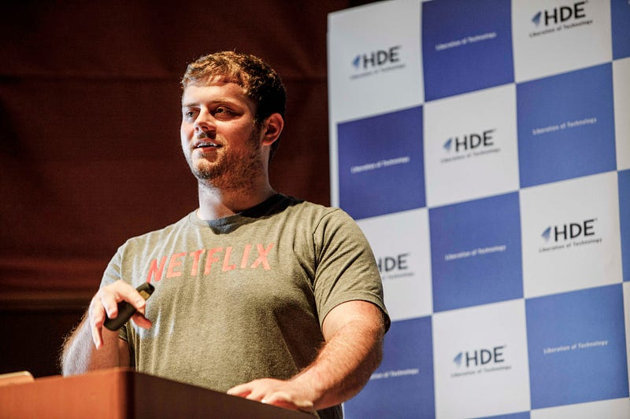
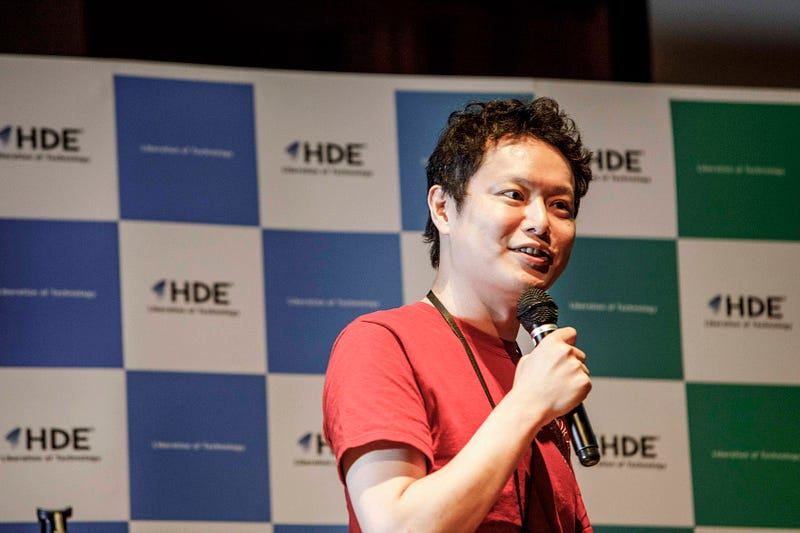
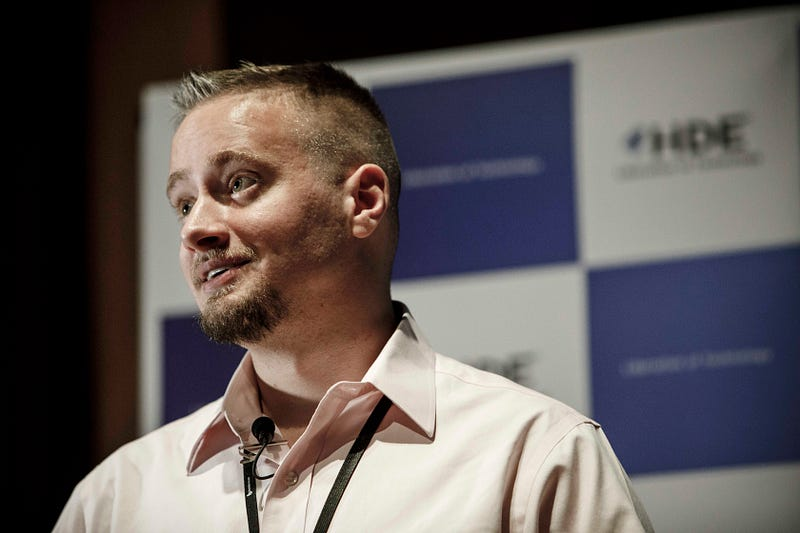
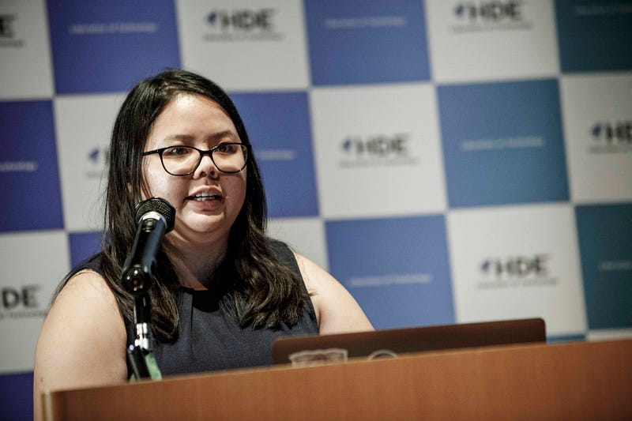
All the Guest Speakers, as well as a few others who gave their talks in English were supported by real-time translators, who magically translated everything they said on the fly to the audience, and vice versa for Q&A sessions. This was sponsored by Cybozu Inc, and Elasticsearch KK.
Elasticは、Elasticsearch、Kibana、Beats、Logsatshの開発元です。リアルタイムかつ大規模なデータの検索、ログ、セキュリティ分析など、様々なユースケースで利用されています。www.elastic.co
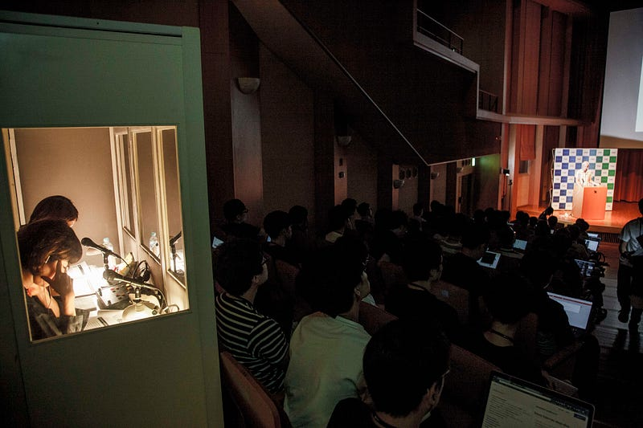
The Sessions
Speaker Dinner
This year, we tried hosting a Speaker Dinner — but we thought it would be a waste if we just gathered all the speakers and didn’t let them speak on stage… so we did this thing called the “One Minute Pitch”
Details can be found in the following separate entry
This is part of a series of articles to show you what builderscon tokyo 2018 was about. builderscon took place between…medium.com
IoT/Gadget Nite
What we call “Day 0” is the conference staff’s practice day (this year was our first time using Eventbrite, so we really needed to practice it). This year we decided to bring together sessions about IoT/gadgets.
I’ve already written about in a previous article, so jump over there for details
This is part of a series of articles to show you what builderscon tokyo 2018was about. builderscon took place between…medium.com
The photos for IoT/Gadget Nite can be found here:
…And Everything Else
We had sessions on the future of the TLS protocol, methods for engineers to better work with designers, stories on writing a Nintendo emulator in Rust, operating system architecture for app devs, sound engineering, Istio, databases, DNS, etc, etc, too many to list here.
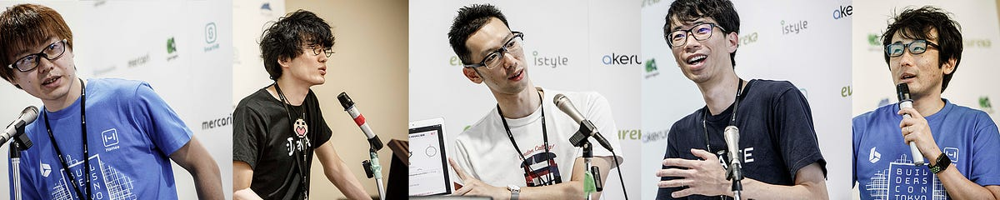
The point is: We wanted diversity, we got diversity. We wanted to host a conference where knowledge and people from different areas can interact and share, and I think we are getting there.
I still want to, one of these days, invite people from Space X, NASA, JPL, etc — the rocket men/women/what have you. I personally believe that the humankind needs to push towards that path, and I really want the attendees to my conference get a glimpse of that. This still hasn’t happened because of Reasons, but one day, my fellow geeks, one day.
The Dinner / Party
The Conference Dinner was hosted by dwango, SmartNews, and Hatena Inc.
SmartNews is the fastest, most efficient way to get all your news now. Your news in one minute. Zero loading time, a…www.smartnews.com
This is one of the main attractions for the event, where attendees can socialize over a drink or two — and that’s exactly what we want: to provide a space for the attendees to make new connections with others.
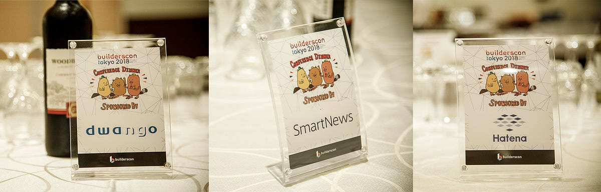
This year we were forced to shrink the capacity for the Conference Dinner for various reasons out of our control, so we decided to have two parts: (1) The “eating” part, and (2) the “drinking part”
This made the ticketing harder for the attendees to grok, but the idea was that we wanted to separate those who just wanted to drink, and those who didn’t necessarily drink but wanted to socialize during the Conference Dinner (not that we didn’t serve alcohol during dinner…)
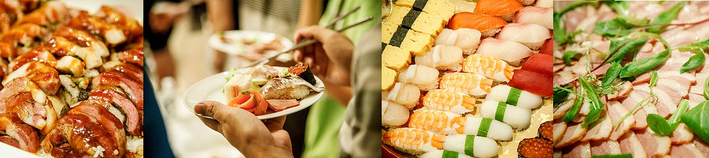
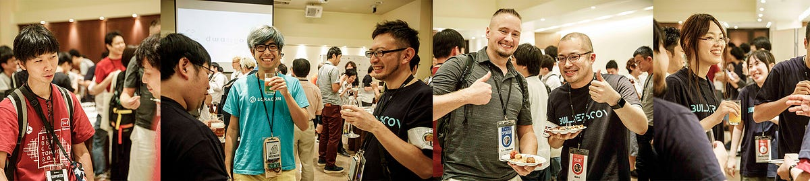
The drinking part was held at the HUB English Pub in the same building, downstairs. We definitely could’ve made the ticketing experience much better, but I think this setup works out nicely, if we can afford to have two different dinner/party in a relatively close to each other.
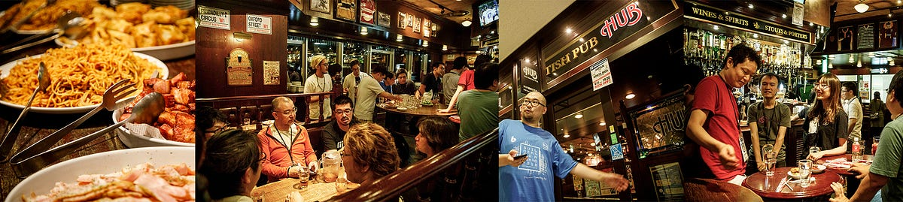
Miscellany
The conference organizers like to have fun. I mean, we put all this effort: why not do something a little extra?
Biiiiig Cookies
This year we made some small cookies and not-so-mall cookies, sponsored by SAKURA Internet.
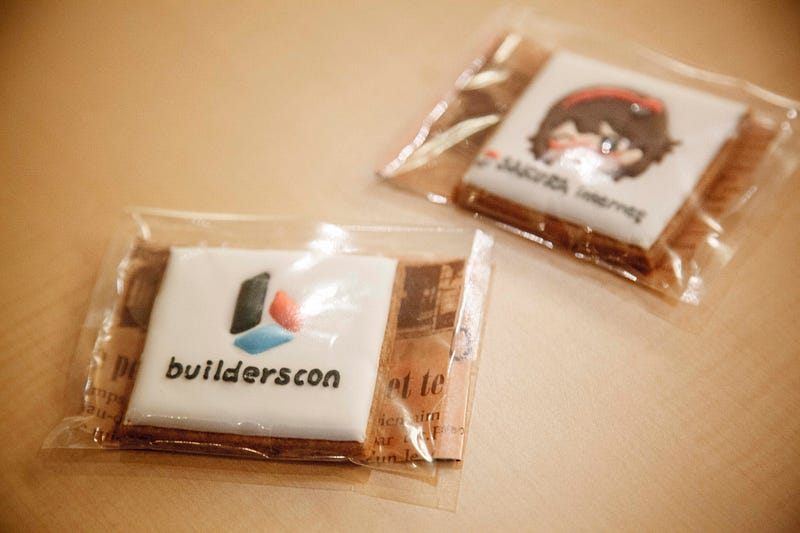
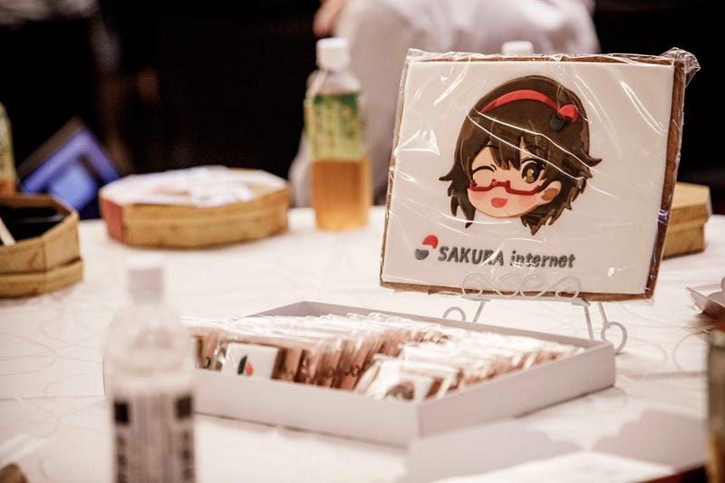
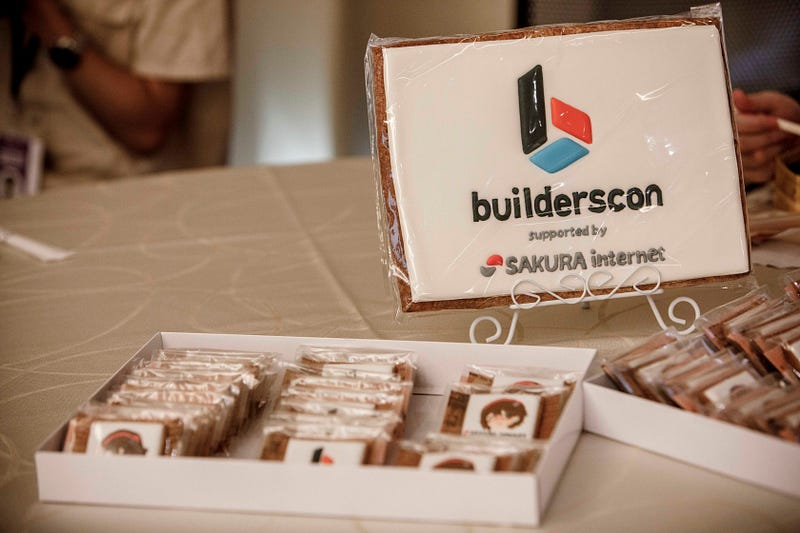
The Photo Booth
This year, as an experiment, we provided what we called the Photo Booth, with the sponsorship of HDE Inc.
もっとも選ばれているクラウドセキュリティ HDE Oneをはじめとする、企業向けのクラウド・セキュリティ分野の製品を包括的に開発・販売するクラウドセキュリティソリューションカンパニーhde.co.jp
The setup was basically an Intel RealSense depth camera, with a touch panel and a few python scripts.
The depth camera only retains the image within a certain depth (say, between 1.0 and 1.5 meters) and removes the rest.
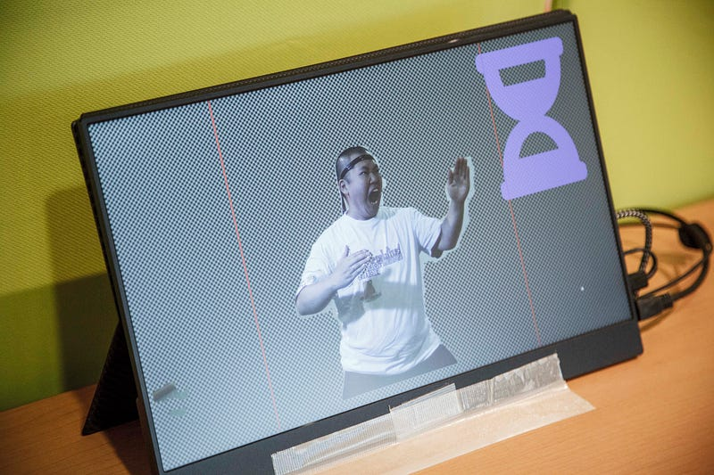
This image is then fed through a script that smoothes out the edges and makes a composite photo, mimicking magazine covers here in Japan.
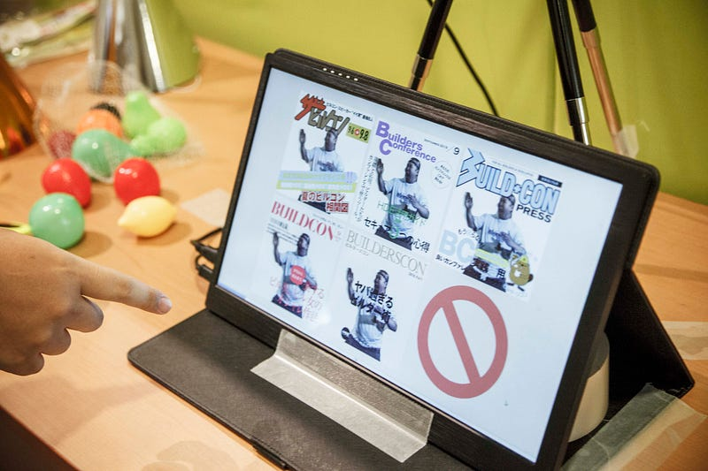
The results are (upon permission) automatically uploaded to our instagram.
And you get this:
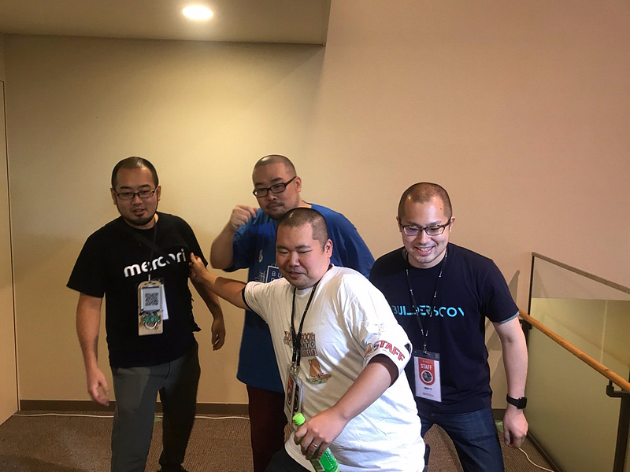
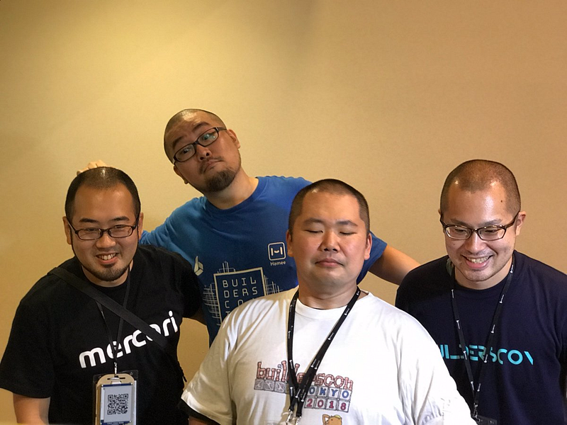
And you get this:
Here are some more examples:
Needless to say, we had fun playing with this system.
The final touches could use a bit more polishing, but I think this is a keeper. If we hold builderscon again, you will probably see this setup.
The Electronic Badge
I really don’t know where to start with this one. One of our staff, @uzulla, just wanted to hand out a hackable electronic badge soooooooooo bad, he basically went on a one-man mission to design, implement, and mass produce 200+ electronic badges built with RaspberryPi Zero and ePaper HAT.
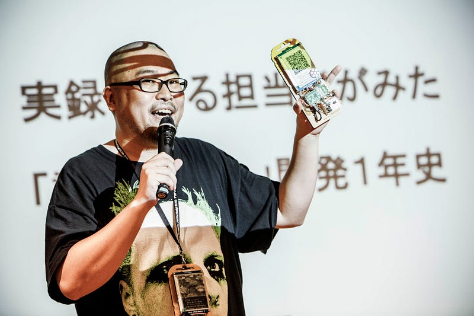
It’s cool little gadget, and it was given to holders of our Supporter tickets. He spent countless hours over 8~10 months on this, and it turned out to be pretty darn amazing.
This article in Japanese chronicles the details of his journey, as well his session on this very subject:
こんにちは、buildersconスタッフの石田ことuzullaです。 みなさんbuildersconのチケットは買いましたか？まだですか？まだなら今すぐチェック！！…blog.builderscon.io
Discover Something New - builderscon is a festival for those who love tech!builderscon.io
This project would never have been able to become reality had it not been for generous sponsorship from mercari. Thank you!
https://mercari.com ( :/ medium.com cannot unfurl their site. bummer)
Best Speaker Awards
To show our appreciation to the speakers who submit their talks, we hold the Best Speaker Awards.
This year we gave away an Anova Nano, Surface Go, and 30+ pieces of boards, parts, and accessories to build something really cool around a RaspberryPi:
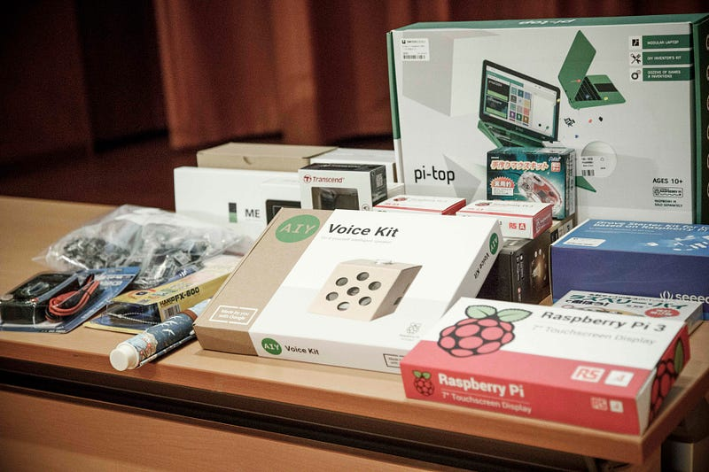
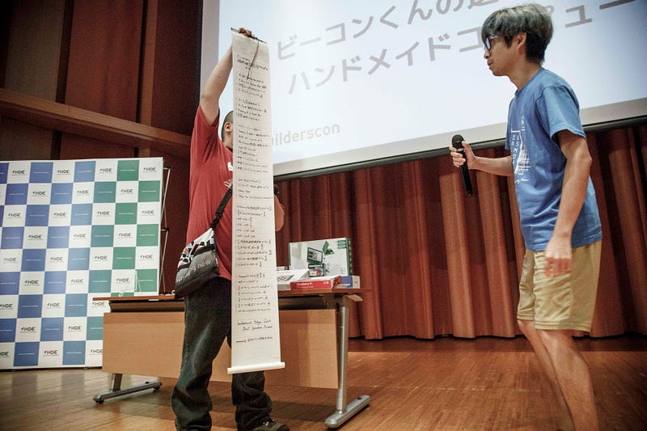
As we have kept on doing these awards, we may have instilled the sense that the speakers are trying to compete for the attendees attention, and we are sorry that this may have caused some attendees to feel… awkward. We don’t intend to rank the sessions, so we’re probably going to rethink about it in the coming years. But this is, in essence, just something extra, something nice that we want to give to the speakers. We will see what we can do.
Aftermath
This was a project made through 10 months of effort by approximately 15 staff members who gave their time voluntarily, supported by 37 sponsors, approximately 40 staff members who helped us during the actual event, and 931 total number of attendees.
It was fun, it was exhausting, and we still have to go through the videos. The videos will be uploaded soon-ish on YouTube. Please be patient while we go through the content to make sure there’s nothing wrong with them.
Videos from builderscon (https://builderscon.io) conferences, and conferences powered by builderscon will appear here.www.youtube.com
You can find what others thought about the conference in their blogs, which we have compiled into a list:
Discover Something New - builderscon is a festival for those who love tech!builderscon.io
If you prefer, you may peruse the various tweets that the attendees have posted during the conference:
2018.09.05に開催された、テック系カンファレンス「builderscon」の初企画「Speaker Dinner」の様子です9/5 SpeakerDinner 前夜祭 １日目togetter.com
And finally, the photos are all available
Right now we still don’t know if we are going to be able to host another one come next year, but please stay tuned to our Twitter account
The latest Tweets from Builderscon (@builderscon). #builderscon…twitter.com
Thanks for all those who came, or otherwise supported us. We hope to seeing you again soon.